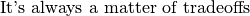
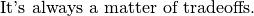

1.6. It’s always a matter of tradeoffs
There is no universal algorithm or paradigm to solve every problem[1].
When confronted with a real problem to solve, we first need to translate it into a mathematical problem. Generally speaking, the more elements from reality we consider, the bigger and nastier the model becomes. There is a tradeoff between the precision with which our model reflects the real problem and the need to keep the model simple enough to be able to solve it efficiently.
When developing algorithms, we are always making decisions among several options, each with its advantages and disadvantages[2]. Let’s say we are implementing our own constraint with our own propagation algorithm (this is exactly what we will do in the chapter Custom constraints: the alldifferent_except_0 constraint).
We might develop a very clever filtering algorithm for our constraint that allows to disregard lots of undesirable variables. Wow, what a brilliant algorithm! Well, maybe not. First, the time needed to filter the domains might be prohibitive. Maybe another - less clever - algorithm that filters less variables would fit better and allow an overall quicker search because for instance the search tree could be visited more quickly. Second, the clever filtering algorithm could disregard some variables that other filtering algorithms or branching schemes are based on, i.e. the clever algorithm is not so clever when it works in collaboration with others!
Be conscious of the tradeoffs and that what seems the best option at a time might actually not work that well no matter how clever the basic idea was. Ideas have to be tested and retested. This testing is an uncompromising way to take decisions but also allows to get a better insight of how and why an algorithm actually works (or fails).
CP and the or-tools library allow us to develop very quickly prototypes we can test, improve, test, redesign, test, etc., you get the idea.
The good optimization researcher’s motto:

Writing this manual is no exception. What content do we introduce and how much details do we add?
Ultimately, you are best aware of your problem and the (limited) resources you have to solve it. As we said:

We will refer to this motto from time to time in this manual.
Footnotes
| [1] | At least, no one found one and with our actual knowledge, there is a strong suspicion that none exist (see the section Complexity theory in a few lines). |
| [2] | Of course, we are talking about clever options. |
Google or-tools |
User's Manual
Google search
Welcome
Tutorial examples
Current chapter
1. Introduction to constraint programming
Previous section
1.5. The three-stage method: describe, model and solve